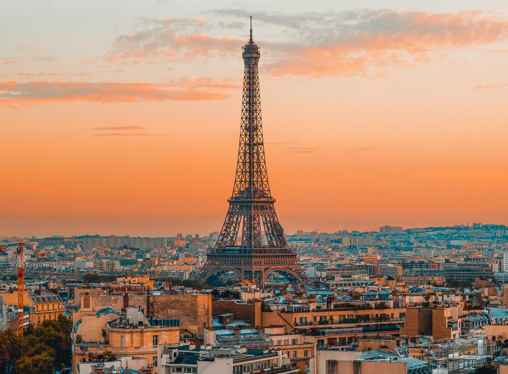
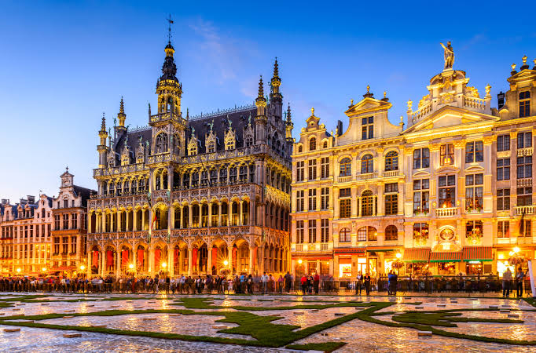
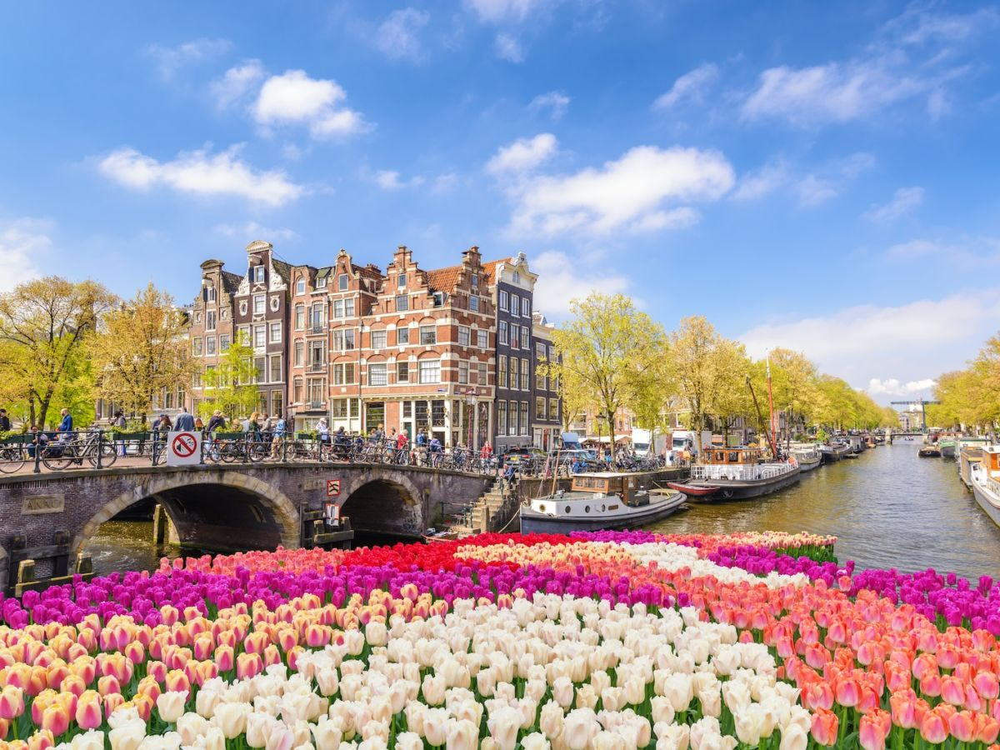

París
Conocida como la «Ciudad de la Luz», es famosa por su inmenso patrimonio histórico, artístico y cultural.


Conocida como la «Ciudad de la Luz», es famosa por su inmenso patrimonio histórico, artístico y cultural.

Es una ciudad cosmopolita que combina historia medieval, arquitectura elegante e importancia política internacional.

Es conocida por sus canales históricos, sus puentes, sus bicicletas y su arquitectura característica.
| Destino | Salidas | Duración | Tarifa |
|---|---|---|---|
| Londres - París | 8:00, 12:00, 17:00 | 2 h 20 min | £89 |
| Londres - Bruselas | 8:00, 12:00, 17:00 | 2 h | £69 |
| Londres - Ámsterdam | 8:00, 12:00, 17:00 | 4 h 10 min | £115 |
Royal Station nace con la idea de convertir cada viaje en una experiencia especial. Somos una estación ferroviaria internacional ficticia dedicada a conectar destinos europeos mediante un servicio que combina comodidad, elegancia y seguridad.
Nuestra misión es ofrecer a cada pasajero una experiencia agradable, donde cada recorrido se convierta en un recuerdo inolvidable.